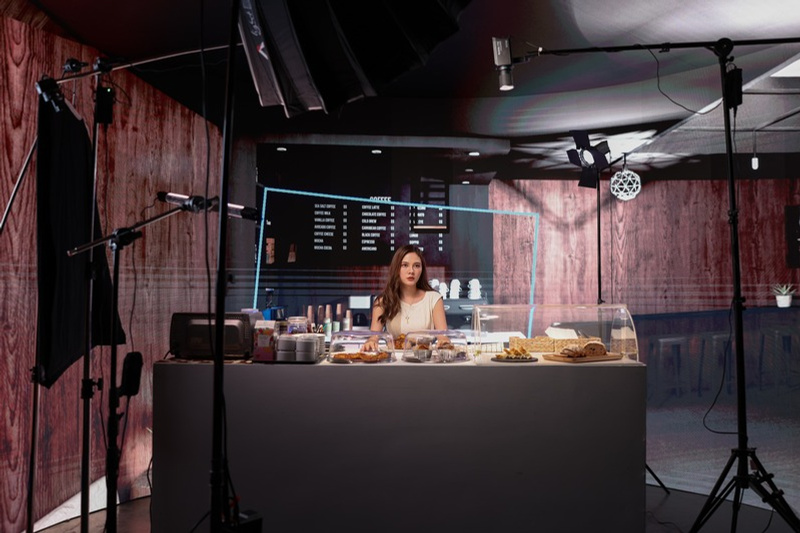
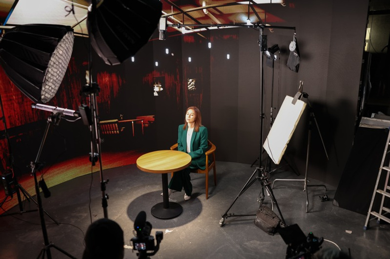
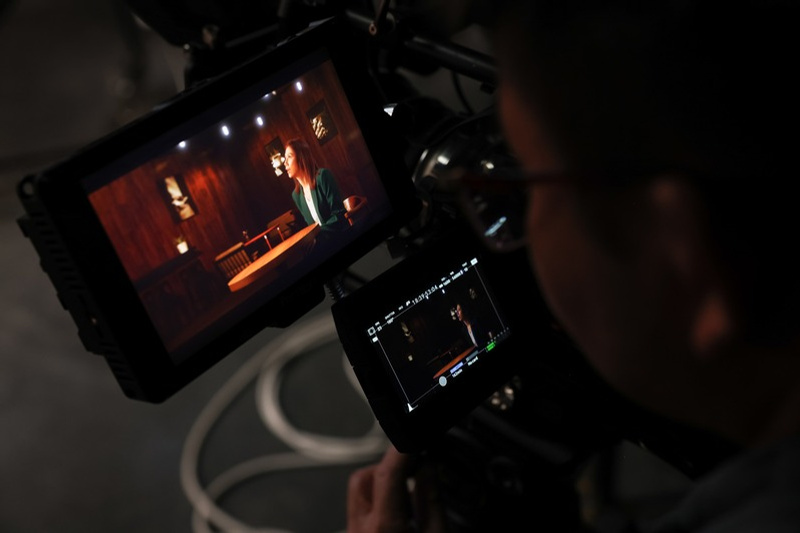
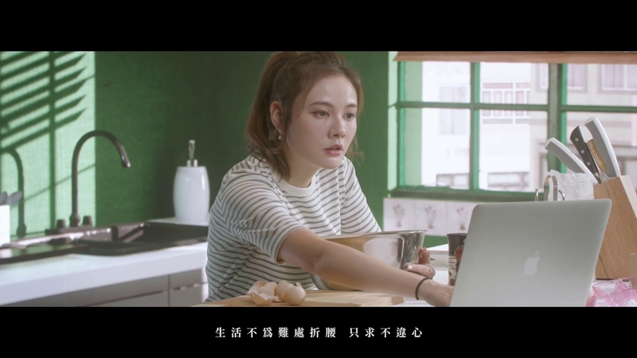

項目背景
項目背景
項目需要以成熟、克制的影像語言承載歌曲情緒，並利用虛擬製作提供可控的燈光、場景與鏡頭氛圍。
製作範圍
製作範圍
- In-Camera VFX 虛擬拍攝
- UE4 場景及 LED Volume 配置
- 音樂錄像拍攝支援
- 燈光及影像氛圍控制
- 後期視覺整理
展示重點
展示重點
此案例可用來展示虛擬製作在成熟流行音樂錄像中的應用，尤其是如何以受控場景支援情感表演。

項目背景
項目需要以成熟、克制的影像語言承載歌曲情緒，並利用虛擬製作提供可控的燈光、場景與鏡頭氛圍。
製作範圍
展示重點
此案例可用來展示虛擬製作在成熟流行音樂錄像中的應用，尤其是如何以受控場景支援情感表演。



